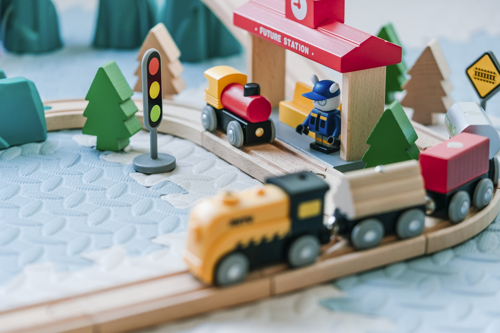
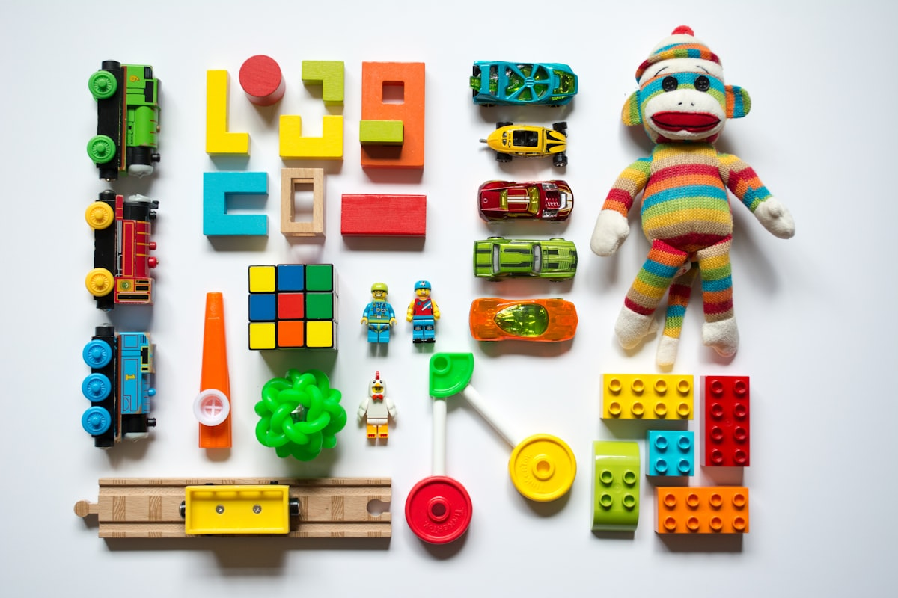

Ofsted Good
Inspected February 2024 — ambitious curriculum, regular outings, a safe setting.
Home-based nursery · Abbey Wood
A safe, nurturing home-from-home at 52 Panfield Road, where children play, grow and thrive — led by Ms Dee, a qualified Early Years Teacher.

Inspected February 2024 — ambitious curriculum, regular outings, a safe setting.
From assistant to nursery manager, SENCo and Early Years Teacher.
15- and 30-hour entitlements, Tax-Free Childcare and student grants.
Pick-ups and drop-offs from local primaries across Abbey Wood.
“Your child would love it here — a true home away from home.”
About Miss Dee
Miss Dee is an Ofsted-registered childminder and qualified Early Years Teacher (Level 6), with well over 20 years as a practitioner, deputy manager, nursery manager and SENCo. Children learn here by exploring, imagining, asking questions and building a can-do attitude.
The house is set up as a small nursery: age-appropriate toys, cooking and baking, planting, outdoor play, stories and role play. Settling in is unhurried, with daily feedback so you always know how the day went.
What we offer
From funded hours to the school run — the practical bits working parents actually need.
DBS-checked team, paediatric first aid, food hygiene and safeguarding. Assistants are trained — not an afterthought.
EYFS every day: painting, cooking, gardening, stories, role play and Early Boost Talk for language.
15- and 30-hour entitlements, 9-month and 2-year funding, Tax-Free Childcare and student grants.
SENCo experience and a Level 3 SEND diploma — extra needs are planned for, not squeezed in.
Drop-offs and pick-ups from De Lucy, Boxgrove, St Thomas à Becket, Harris Garrard, Parkway, Bannockburn and Alexander McLeod.
Garden play plus libraries, parks, soft play, farms and local shops — cultural capital, not just a back room.
Rhythm of the day
Each day has a reassuring rhythm, flexible enough for the children actually in the room.
Warm hello, free play and conversation — a calm start to the day.
Books, music, movement and the seven EYFS areas through play.
Creative, sensory and problem-solving play, indoors and out.
Snacks, lunch, personal care, rest and sleep as each child needs.
Outdoor play, gardening and time in the local environment.
A calm collection, with a little of the day’s story for you.
Life here
Play, making, music and the outdoors — a peek at the world children step into.

Parent stories
The kind of care you feel at pickup — children who don’t want to leave, and parents who can breathe.
My son has been attending since January, and the progress has been incredible. Miss Dee is an inspirational practitioner — I wouldn’t send him anywhere else.
My daughter started at 6 months, is now 3+ and doing very well. She gets upset at pick-up — that’s how much she loves it. 200% recommendation.
When he first came he couldn’t speak or do much on his own. The change has been wonderful. She feels like family.
This term
The autumn term is underway — coats on, leaves to collect, and a short break at the end of October.
Please bring a named coat every day. The weather is cooler and less predictable, and we still play outdoors.
Learning is still rooted in belonging, friendship and the season: nature walks, colour sorting, stories and plenty of movement. A new newsletter will go up here as soon as it is ready.
Good to know
If yours isn’t here, send a note — we’re happy to talk it through.
Monday to Friday, 8:00am to 6:00pm, at 52 Panfield Road, London SE2 9DW. Hours can be discussed for working and shift-based families. Weekend overnight care isn’t offered.
We agree a flexible plan: a visit together, a short supported stay, then gradually longer sessions. Keep goodbyes warm and consistent, and a comfort item is welcome where agreed. You can ask for an update after drop-off.
Named spare clothes, weather-appropriate coat and shoes, nappies and wipes if needed, a comfort item, and any agreed cup or medication handed to an adult — never left in the bag. Clothes should be fine with paint, mud and outdoor play.
Yes — 15- and 30-hour entitlements, 9-month and 2-year-old funding, Tax-Free Childcare and Universal Credit support where eligible. Funding is not automatic: you’ll need a code, and extra hours, meals and trips are agreed in advance.
De Lucy, Boxgrove, St Thomas à Becket RC, Harris Garrard Academy, Parkway, Bannockburn, and pick-ups from Alexander McLeod. Holiday activities are available too.
Through play, using the EYFS. Children paint, cook, garden, visit the library and farm, and we use Early Boost Talk to grow language. School readiness — potty training, independence, routines — is part of the day, not a crash course in September.
Yes. Miss Dee has been a SENCo and holds a Level 3 SEND diploma. Extra needs are planned into the day, with close partnership with families.
Call, WhatsApp, email or use the form. We’ll arrange a settling visit so you and your child can meet us before anything is decided.
Get in touch
Tell us a little about your family — days, funded hours, school run — and we’ll find a time to visit.